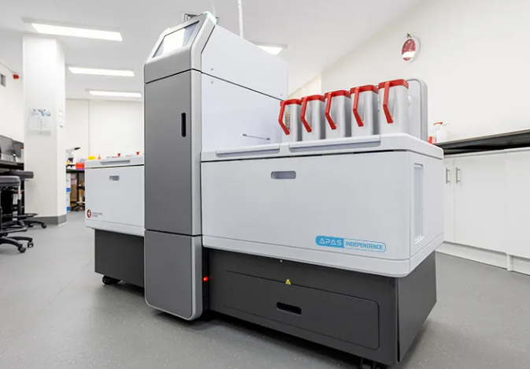
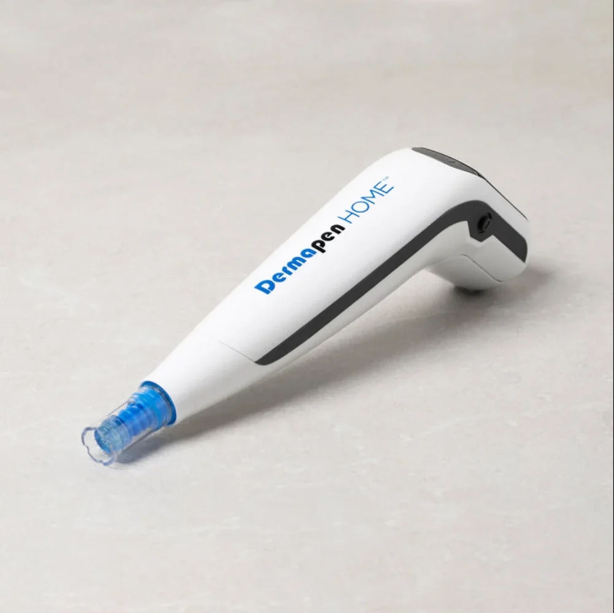
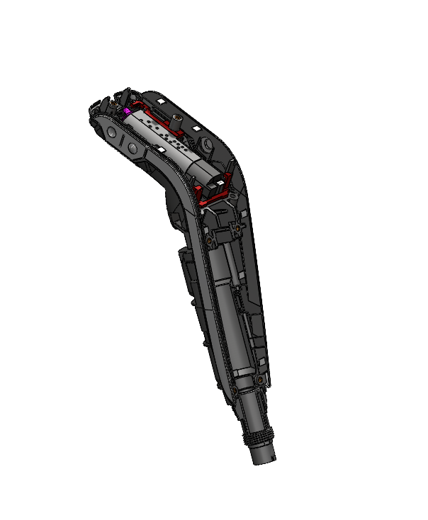
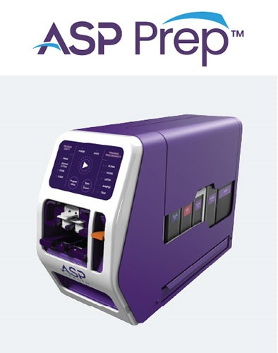
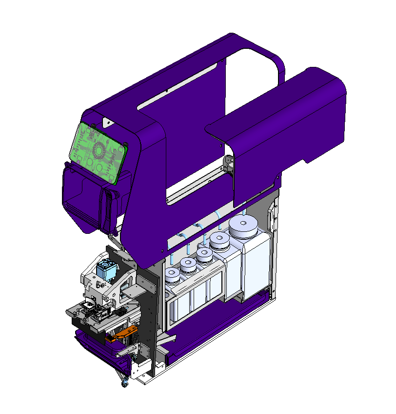
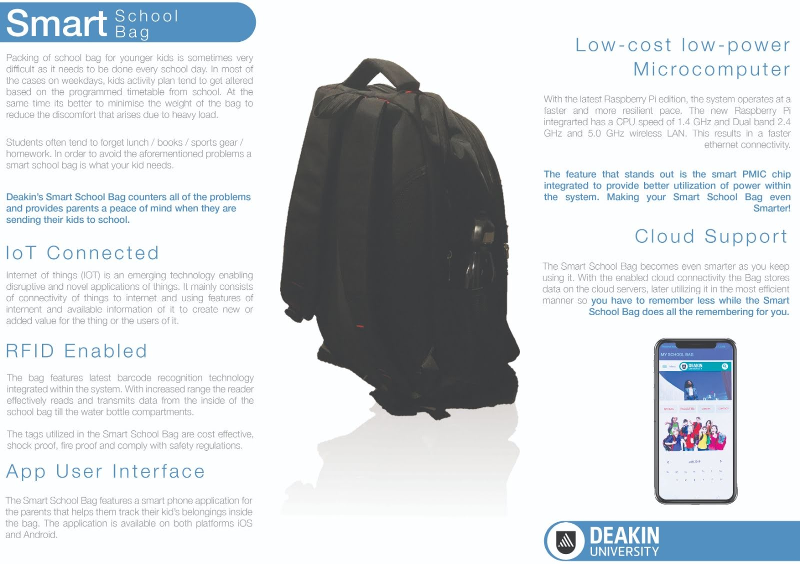

Projects
APAS Independence


Advanced AI-driven laboratory automation system developed by Clever Culture Systems to automate imaging, interpretation, and reporting of microbial growth on culture plates.
- Designed and refined mechanical components for automated microbiology sample processing.
- Developed 3D CAD models and detailed drawings for precision assembly and manufacturability.
- Optimized part tolerances and fits for high repeatability in automated operations.
- Selected materials and finishes to ensure durability, chemical resistance, and compliance with medical standards.
- Collaborated with suppliers and manufacturers to improve production efficiency and reduce lead times.
- Performed prototyping and iterative testing to validate design performance and ergonomics.
- Integrated safety and maintenance features to minimize downtime and operational risk.
Learn more: Clever Culture Systems - APAS Independence
Dermapen® Microneedling System


Consumer-oriented microneedling device designed for safe and effective skincare treatment.
- Optimized mechanical performance incorporating elastomeric spring technology for durability.
- Integrated patented anti-backflow mechanism for user safety.
- Device met rigorous clinical standards for reliability and performance.
- Achieved over 95% customer satisfaction through ergonomic design and reliability.
- Contributed to design refinement and prototyping stages.
Learn more: Dermapen World
ROSE Prep™ System


Automated sample preparation solution for Rapid On-Site Evaluation (ROSE) procedures, developed in collaboration with ASP Health.
- Designed and built over 100 units for ASP Health's ROSE Prep™ program
- Integrated mobile automation with intuitive UI for seamless operation
- Ensured cross-contamination prevention through custom consumables
- Recognized with the Australian Good Design Award in 'Medical and Scientific' category
Learn more: ASP Health ROSE Prep™
Smart Backpack
IoT-enabled smart backpack designed at Deakin University, where I led the team.
- Integrated sensors for smart functionality
- Led team in design & prototyping
Automotive Restoration


Personal project restoring classic vehicles, combining mechanical engineering with hands-on craftsmanship.